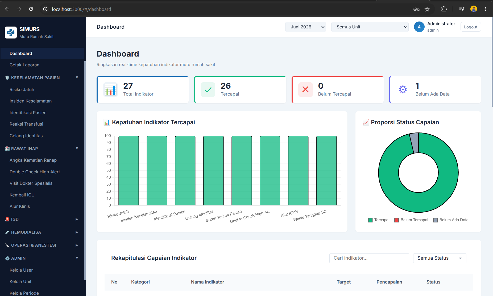

Flagship System

Sistem Monitoring Mutu Rumah Sakit
Aplikasi web komprehensif untuk pemantauan, pengukuran, dan analisis 82+ Indikator Mutu Nasional (IMN), IMPRS, serta IKP secara real-time per unit guna kesiapan akreditasi rumah sakit.
82+ Indikator IMN
Mass Import Excel
Audit Trail
Node.js
Express
Prisma
MariaDB
JWT